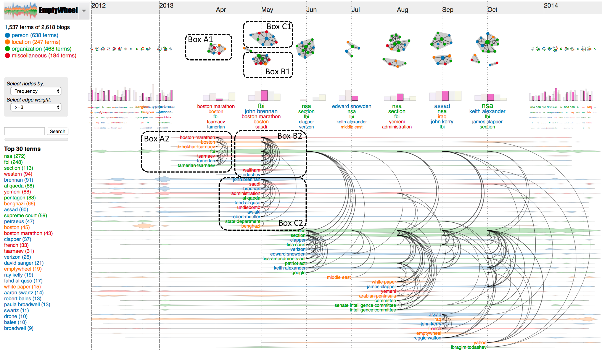
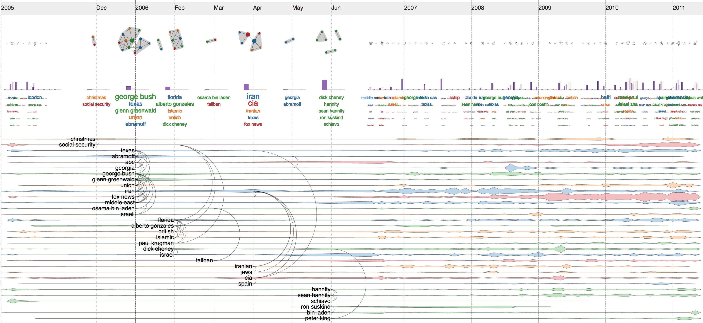

Text analytics
DycomDetector is a novel approach for topic modeling in text corpora. Our algorithm extracts and classifies the keywords, calculates relationships based on keywork co-ocurrences, constructs the networks at different time points, applies a graph partitioning algorithm to extract latent communities. The intuitive interface of our system supports various interactive features, such as lensing and filerting by sudden increase in term ferequency, vertex degree, betweenness centrality, etc. It also allows the users to search for a topic of interest and visualize its temporal relations with other detected communities.  